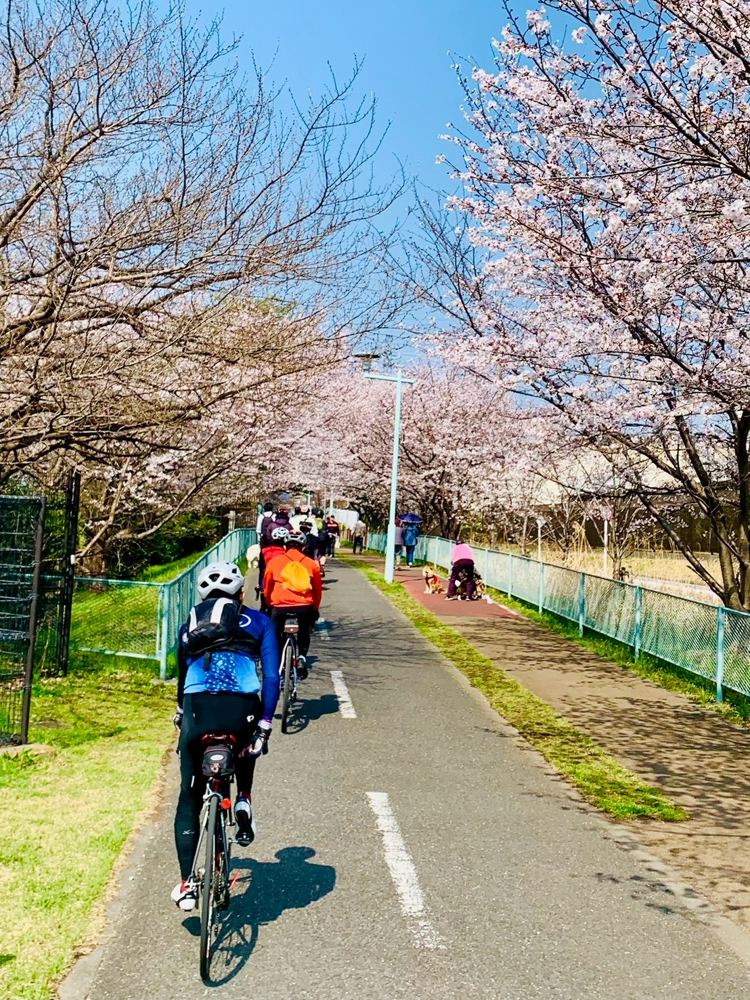
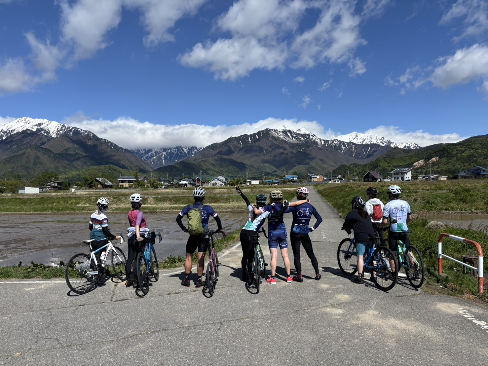
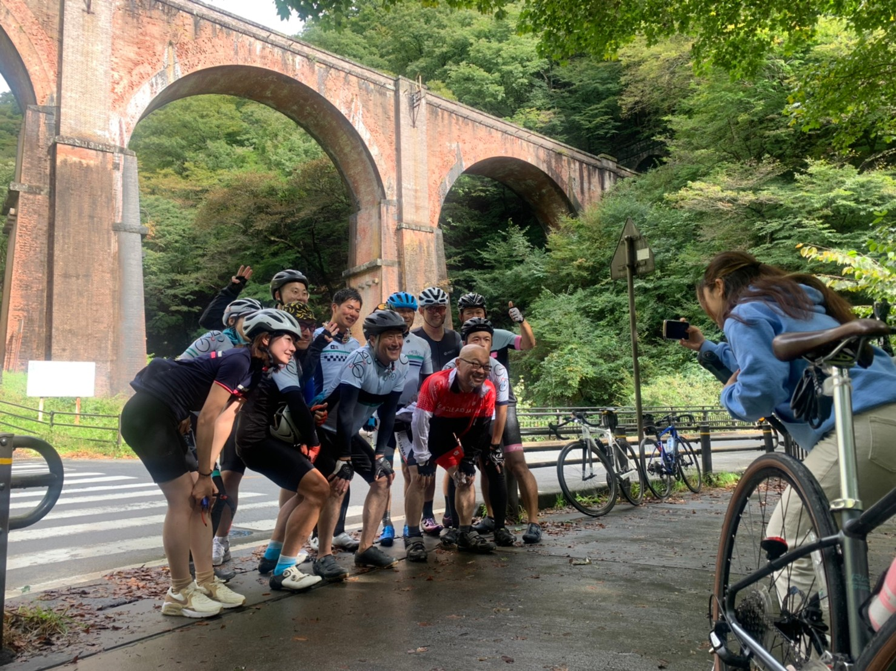

2026年の予定2026 Schedule
今年のライドイベント
Upcoming Events
2026年は6つのイベントを予定しています。ぜひご参加ください！
We have 6 events planned for 2026. Come join us on the road!

3月Mar
29
多摩湖ランチライド
Tama Lake Lunch Ride
武蔵境〜多摩湖 · 日帰り
Musashisakai → Tama Lake · Day trip
初心者歓迎All Levels
5月May
4–10
Strava バーチャルライド
Strava Virtual Ride
オンライン参加 · GWチャレンジ
Online participation · Golden Week challenge
オンラインOnline
5月May
16–17
北アルプスライド
North Alps Ride
長野県 · 1泊2日
Nagano · 2 days
チャレンジャー参加Youth Challengers
10月Oct
10–12
軽井沢チャレンジライド
Karuizawa Challenge Ride
茨城〜軽井沢 · 3日間 · フラッグシップ
Ibaraki → Karuizawa · 3 days · Flagship
フラッグシップFlagship Event
10月Oct
16–18
琵琶湖ライド
Lake Biwa Ride
滋賀県 · 2泊3日
Shiga · 3 days
チャレンジャー参加Youth Challengers
11月Nov
8
年次報告会
Annual Report Gathering
2026年の活動を振り返る報告会
Year-end review and celebration of 2026 rides
全員参加All Welcome